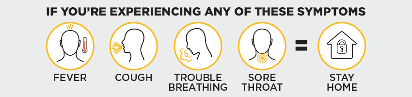

2020 OT FILMS Canada LP | Privacy Policy | Terms of Use
Covid-19 Policies
Face Mask Policy
In compliance with local health regulations and/or by-laws, it is mandatory to wear a non-medical face covering over your nose, mouth and chin while you are on the premises of any OT Film's locations. You may remove your face covering to enjoy your concessions when seated in your auditorium.
Every OT Film Cast and Crew member will be wearing proper protective equipment as physical distancing might not always be possible.
Allthough physical distancing may not always be possible at all OT Film locations we strogly recomend all vistors make their best attempts at physical dictancing
Masks are reqierd to woren by patrins at all times during their vist when not seated in a theater
Contact Tracing
As per Provincial requirements, OT Films has implemented Contact Tracing measures at the following locations. To ensure a safe and physically-distanced movie-going experience, we encourage all guests to purchase their tickets and reserve their seats in advance at OTFilms.com.
Can I go To the Movies?
please stay home if you have any of the fallowing symptoms
fever
cough
touble breahting
sore throat
loss of taste or smell
sever dizzyniss

Movie Tickets
We encourage Guests to purchase their movie tickets in advance at OTFilms.com. Tickets may also be purchased at the theatre using a purposefully-distanced automated box office kiosk with touchscreens that are covered with an antimicrobial copper film to provide enhanced cleanliness.
We encourage in-theatre ticket and concession purchases using Contactless payment methods (credit/debit, mobile payments, gift cards and vouchers).
Please note that we have maintained Free Reserved Seating, and introduced Free Reserved Seating in select locations.
Plan Ahead
To achieve the recommended physical distancing for our Guests, we ask that you arrive no sooner than 20 minutes (15 minutes in Ontario) prior to your movie’s scheduled showtime
If you arrive earlier, you may be asked to remain outside the theatre until your movie is ready for seating.
Physical Distancing And Hygien
Please follow all directional and physical distancing signs, and the guidance of our Cast and Crew members as you move from the front doors, to concession, to your movie, and finally when you exit the theatre following your movie.
Throughout the theatre, we have installed protective safety shields at interaction points to safeguard both our Guests and our Crew members.
We have temporarily removed lobby seating for added Guest safety.
Hand sanitizer will be available throughout your theatre experience including at the entries, concessions, washrooms and the entrance to each theatre corridor.
Our Cast And Crew
Our Fit for Work policy requires that each Cast member complete a health questionnaire to confirm they have not been exposed to anyone with COVID-19, and are symptom-free before they enter the theatre and start their shift.
Every OT Films Cast and Crew member will always be wearing proper protective equipment. PPE will be supplied by OT Films for its Cast and Crew members.
Every OT Films Cast and Crew member will be required to wash their hands every 30 minutes.
Enhanced Cleaning
As an enhanced cleaning practice, we will be disinfecting our auditoriums, seating surfaces, washrooms and common areas with an odorless and 100% biodegradable cleaning product which has been proven to kill 99.9999% of bacteria and has been approved by Health Canada and the EPA for use against SARS-CoV-2, the Coronavirus that causes COVID-19.
OT Films will have a dedicated Hygiene Officer scheduled on each shift, with the sole responsibility of ensuring that cleaning and safety standards are completed as scheduled and to specification.
There will be extra time provided between movies to complete our enhanced cleaning standards. Only after the Manager on Duty or Hygiene Officer has inspected and signed-off on the cleaning of the auditorium—will it be released to seat our next Guests.
We have deployed additional cleaning Crew members who are dedicated to enhanced cleaning of high-contact areas throughout the theatre every 30 minutes.
Washrooms
All sinks and stalls are available. Alternate urinals will be closed to provide physical distancing.
Please always respect others and maintain physical distancing when entering, occupying, and exiting the restrooms.
Leaving the theater
To maintain physical distancing when exiting the theatre, we ask:
When your movie is over, please follow the instructions of the OT Films Cast member or all directional signage and exit by row, starting at the front.
After you exit the auditorium, additional directional signage will assist you to exit the theatre.
Where possible you will be directed through an alternative exit path that does not require you to travel back through the lobby area.
As you exit the theatre please be kind - deposit your own garbage in the appropriate bins. Our Cast and Crew will truly appreciate your assistance in keeping our theatres clean for all Movie Lovers.